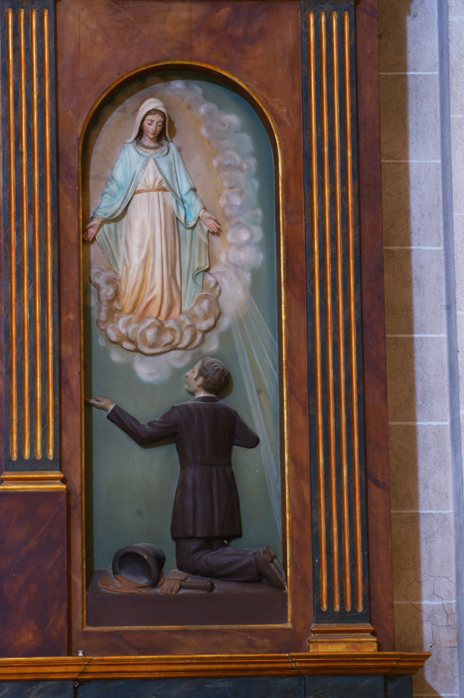

Alfons de Ratisbona (1814-1884) va ser un jueu francès convertit al catolicisme que dedicà la seva vida a l’evangelització dels jueus. Fill d’una família de banquers jueus d’Alsàcia, durant un viatge a Roma l’any 1842 un conegut li regalà una Medalla Miraculosa i li demanà que se la penjàs al coll. Pocs dies després, mentre visitava la basílica de Sant’Andrea delle Fratte, se li aparegué la Mare de Déu de la Medalla Miraculosa. Arran d’aquella visió, es convertí al catolicisme.Va ser ordenat sacerdot l’any 1847. Juntament amb el seu germà Teodor (que s'havia convertit al catolicisme abans que ell) fundà la Congregació de Nostra Senyora de Sion, dedicada a l’apostolat entre els jueus i a l’educació catòlica dels fills de famílies jueves. Alfons estengué la congregació per Terra Santa, on fundà convents, orfenats i escoles.\\ Aquest relleu, obra, com la resta de l’altar, de Guillem Mas (s. XX), mostra l’aparició de la Verge Maria a Alfons de Ratisbona. La Verge hi apareix damunt niguls, envoltada de llum i vestida amb túnica blanca i mantell blau, símbols de puresa i celestialitat, respectivament. La seva postura recorda la de la Verge de la Medalla Miraculosa: dreta, amb els braços oberts i irradiant raigs de llum de les mans cap al convertit. Alfons de Ratisbona hi apareix agenollat als seus peus, vestit elegantment segons la moda del segle XIX, amb el capell i el bastó deixats a terra.